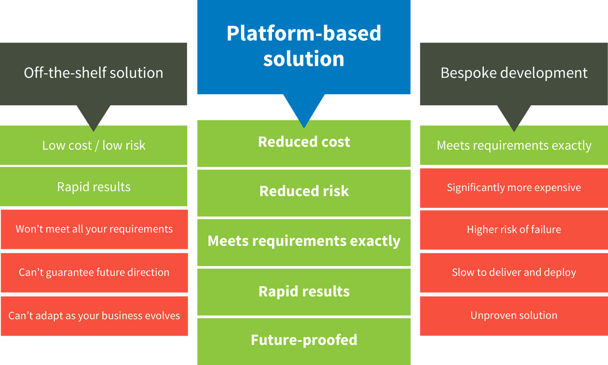

El curso de Desarrollo Basado en plataformas se centra en el entendimiento de las caracteristicas
de las diferentes plataformas disponibles en la actualidad (diversos Sistemas operativos, plataformas web, dispositivos moviles, etc.),
con la finalidad de poder desarrollar aplicaciones que puedan ser ejecutadas eficientemente en estas de acuerdo
a las restricciones y oportunidades que estas presentan.
Se desarrollan por tanto no solo habilidades de programacion, sino un paradigma
de pensamiento generalizable a varias plataformas computacionales, con el proposito de que el alumno no se estanque solo en conceptos presentes
y que pueda expandir su conocimiento de forma acorde al desarrollo de las tecnologias para los proximos años.
